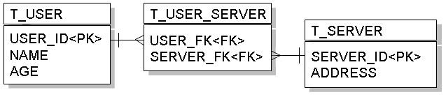
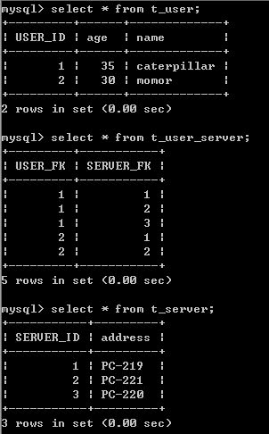

在資料庫表格上要進行多對多對應，可以藉由一個中介表格來完成，也就是藉由多對一、一對多來完成多對多關聯。

多對多由於使用了中介表格，在查詢效率不彰，且在程式的物件模式上，多對多會使得物件與物件之間彼此依賴，並不是一個很好的設計方式，在設計上應避免使用 多對多關係。
若要設計多對多關係，則可以使用@ManyToMany的標註，例如設計User類別如下：
- User.java
package onlyfun.caterpillar;
import java.io.Serializable;
import java.util.Set;
import javax.persistence.CascadeType;
import javax.persistence.Column;
import javax.persistence.Entity;
import javax.persistence.GeneratedValue;
import javax.persistence.GenerationType;
import javax.persistence.Id;
import javax.persistence.JoinColumn;
import javax.persistence.JoinTable;
import javax.persistence.ManyToMany;
import javax.persistence.Table;
@Entity
@Table(name="T_USER")
public class User implements Serializable {
@Id
@GeneratedValue(strategy = GenerationType.AUTO)
@Column(name="USER_ID")
private Long id;
private String name;
private Long age;
@ManyToMany(cascade=CascadeType.ALL)
@JoinTable(
name="T_USER_SERVER",
joinColumns={@JoinColumn(name="USER_FK")},
inverseJoinColumns={@JoinColumn(name="SERVER_FK")}
)
private Set<Server> servers;
// 以下為 Getter、Setter
...
}其中@JoinTable中name設定的是中介表格的名稱，並設定對應的欄位名稱。而Server可以如下設計：
- Server.java
package onlyfun.caterpillar;
import java.util.Set;
import javax.persistence.CascadeType;
import javax.persistence.Column;
import javax.persistence.Entity;
import javax.persistence.GeneratedValue;
import javax.persistence.GenerationType;
import javax.persistence.Id;
import javax.persistence.ManyToMany;
import javax.persistence.Table;
@Entity
@Table(name="T_SERVER")
public class Server {
@Id
@GeneratedValue(strategy = GenerationType.AUTO)
@Column(name="SERVER_ID")
private Long id;
private String address;
@ManyToMany(cascade=CascadeType.ALL, mappedBy="servers")
private Set<User> users;
// 以下是 Getter、Setter
...
}這邊直接透過mappedBy屬性設定了雙向關聯，一個儲存時的例子如下：
Server server1 = new Server();
server1.setAddress("PC-219");
server1.setUsers(new HashSet());
Server server2 = new Server();
server2.setAddress("PC-220");
server2.setUsers(new HashSet());
Server server3 = new Server();
server3.setAddress("PC-221");
server3.setUsers(new HashSet());
User user1 = new User();
user1.setName("caterpillar");
user1.setServers(new HashSet());
user1.setAge(new Long(35));
User user2 = new User();
user2.setName("momor");
user2.setServers(new HashSet());
user2.setAge(new Long(30));
// 多對多，互相參考
user1.getServers().add(server1);
user1.getServers().add(server2);
user1.getServers().add(server3);
server1.getUsers().add(user1);
server2.getUsers().add(user1);
server3.getUsers().add(user1);
user2.getServers().add(server1);
user2.getServers().add(server3);
server1.getUsers().add(user2);
server3.getUsers().add(user2);
EntityManager entityManager =
JPAUtil.getEntityManagerFactory().createEntityManager();
EntityTransaction etx = entityManager.getTransaction();
etx.begin();
entityManager.persist(user1);
entityManager.persist(user2);
etx.commit();
entityManager.close();
執行後資料庫的內容如下：

如果您使用以下方式進行查詢：
EntityManager entityManager =
JPAUtil.getEntityManagerFactory().createEntityManager();
EntityTransaction etx = entityManager.getTransaction();
etx.begin();
user1 = entityManager.find(User.class, new Long(1));
etx.commit();
System.out.println(user1.getServers());
entityManager.close();
若是使用Hibernate作為JPA的實作，則首先會先查詢出T_USER表格的內容，再透過left out join的方式查詢對應的T_SERVER中的資料，如以下所產生的SQL語句：
Hibernate:
select
user0_.USER_ID as USER1_0_0_,
user0_.age as age0_0_,
user0_.name as name0_0_
from
T_USER user0_
where
user0_.USER_ID=?
Hibernate:
select
servers0_.USER_FK as USER1_1_,
servers0_.SERVER_FK as SERVER2_1_,
server1_.SERVER_ID as SERVER1_1_0_,
server1_.address as address1_0_
from
T_USER_SERVER servers0_
left outer join
T_SERVER server1_
on servers0_.SERVER_FK=server1_.SERVER_ID
where
servers0_.USER_FK=?
select
user0_.USER_ID as USER1_0_0_,
user0_.age as age0_0_,
user0_.name as name0_0_
from
T_USER user0_
where
user0_.USER_ID=?
Hibernate:
select
servers0_.USER_FK as USER1_1_,
servers0_.SERVER_FK as SERVER2_1_,
server1_.SERVER_ID as SERVER1_1_0_,
server1_.address as address1_0_
from
T_USER_SERVER servers0_
left outer join
T_SERVER server1_
on servers0_.SERVER_FK=server1_.SERVER_ID
where
servers0_.USER_FK=?